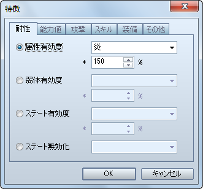
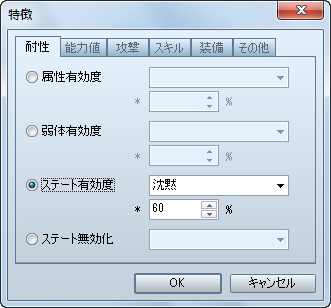

VA 取消了这个功能，请手动调整敌人的位置。
令敌人拥有攻击时有几率触发必杀（在VX中称为[暴击]）能力的设置方法。
[敌人]特性 - 能力 - 添加能力 - 必杀几率
带有属性的攻击对敌人有效程度的设置方法。
[敌人]特性 - 抗性 - 属性抗性

| VX 的设置 | VA 的设置 |
| A | 200% |
| B | 150% |
| C | 100% 或不设置 |
| D | 50% |
| E | 0% |
| F | 取消 |
设置敌人被附加各种状态时的成功率。
[敌人]特性 - 抗性 - 状态抗性

| VX 的设置 | VA 的设置 |
| A | 100% |
| B | 80% |
| C | 60% |
| D | 40% |
| E | 20% |
| F | 0% |